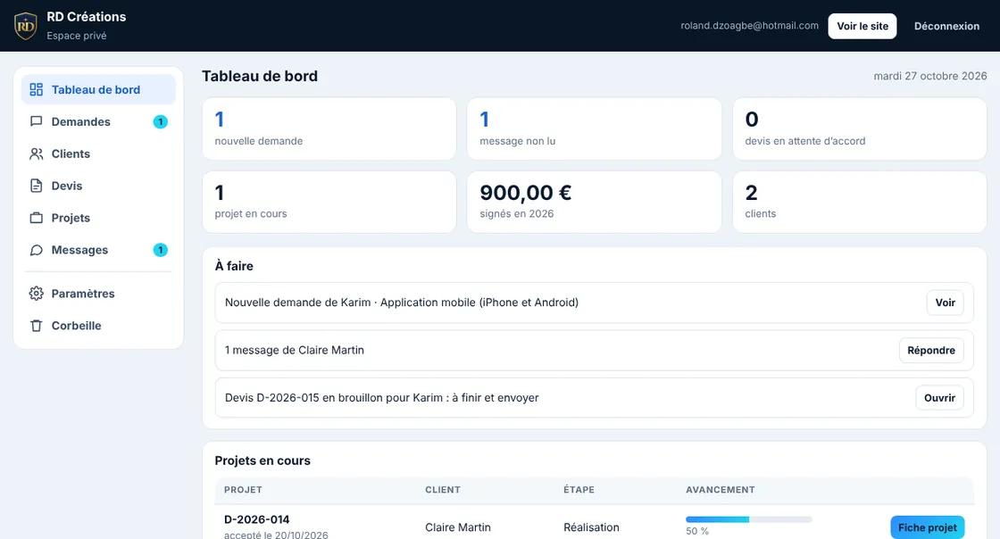

← Le projetAperçu des interfaces · Captures existantes
Un espace pour avancer.
Des devis et des documents accessibles côté client. Des priorités et un suivi côté administration.
Côté client

Côté administration

Et si on donnait forme à votre projet ?
Parlons de vos idées, même juste pour en discuter.